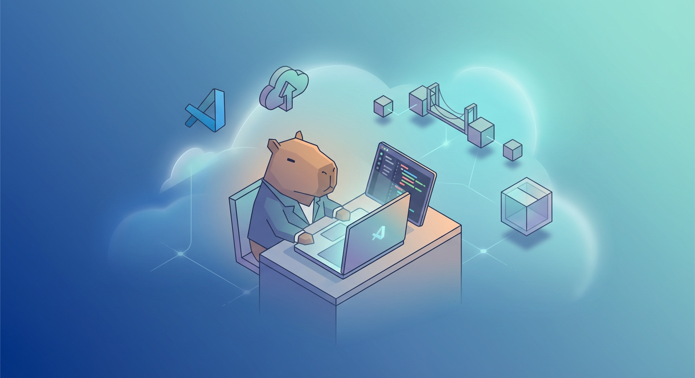

Connect HappyCapy Sandbox from Local IDE (VS Code)
HappyCapy Website: https://happycapy.ai/
💡 Use Cases
In some development scenarios, you may prefer a local IDE:
- Large projects (hundreds of files)
- Use your existing local development environment
- Need specific paid extensions or enterprise tools
- Prefer local IDE shortcuts and workflow
Good news: with VSCode Remote Tunnels, you can easily connect to the HappyCapy cloud sandbox!
✅ Preparation
- HappyCapy account (visit https://happycapy.ai/)
- Local VSCode 1.70+
- GitHub account (for authorization)
- Internet connection
🚀 Connect in 3 Steps
Step 1️⃣: Start Tunnel in HappyCapy
In the HappyCapy chat box, enter:
Please start VSCode Remote Tunnel (global mode) --name happycapy, and show the GitHub verification link and code
HappyCapy will install and start the tunnel automatically, then return:
{kind=link}
- Authorization page: https://github.com/login/device
- Authorization code: XXXX-XXXX (8 characters)
Step 2️⃣: GitHub Authorization (1 minute)
- 1. Open your browser and visit: https://github.com/login/device
- 2. Enter the authorization code
{kind=link}
- 3. Click [Authorize]
{kind=link}
Step 3️⃣: Connect from Local VSCode
Install Extension
- 1. Open local VSCode
- 2. Press
Ctrl + Shift + Xto open Extensions
- 3. Search
Remote - Tunnels(by Microsoft)
- 4. Click Install
{kind=link}
Connect Tunnel
- Press
F1to open the Command Palette
- Enter:
Remote-Tunnels: Connect to Tunnel
{kind=link}
3. Sign in to GitHub (first time only)
4. Select happycapy
{kind=link}
Wait for connection...
{kind=link}
>< Remote [happycapy] green indicator📂 Start Using
Open Remote Folder
- 1. Click "Open Folder..."
- 2. Enter path:
/home/nodeor/workspace
- 3. Click "Yes, I trust the authors"
{kind=link}
Open Terminal
Press Ctrl + ` to open the remote terminal
pwd and whoami to confirm you are in the cloud sandbox{kind=link}
📚 Quick Reference
HappyCapy Prompt Cheatsheet
🚀 Start Tunnel
Please start VSCode Remote Tunnel (global mode) --name happycapy, and show the GitHub verification link and code
🔍 Check Status
Is the VSCode Tunnel still running?
⏸️ Stop Service
Please stop the VSCode Tunnel service
🔄 Restart
Please restart VSCode Tunnel
VSCode Shortcuts
📂 Open Folder
Ctrl + K, then Ctrl + O
💻 Open Terminal
Ctrl + `
🎮 Command Palette
F1 or Ctrl + Shift + P
🔍 Quick Open
Ctrl + P
🔌 Disconnect
Click the bottom-left >< Remote indicator
❓ FAQ
Q: Cannot find my tunnel?
- 1. Ask in HappyCapy: “Is the VSCode Tunnel still running?”
- 2. If not running, run the start prompt again
- 3. Check local internet connection
- 4. Re-sign in to GitHub:
F1→Remote-Tunnels: Sign out
Q: Connection timeout
- 1. Check internet connection
- 2. Temporarily disable VPN
- 3. Restart Tunnel in HappyCapy
- 4. Update VSCode to latest version
Q: Cannot save files
- 1. Check disk space: run
df -h
- 2. Check file permissions:
ls -la
- 3. Reconnect tunnel
- Use HappyCapy web for quick daily work; switch to local VSCode for complex projects. Both share the same cloud sandbox, so no file migration is needed.
🎉 You now know the full workflow to connect local VSCode to the HappyCapy cloud sandbox!
Enjoy your cloud development journey! 🚀